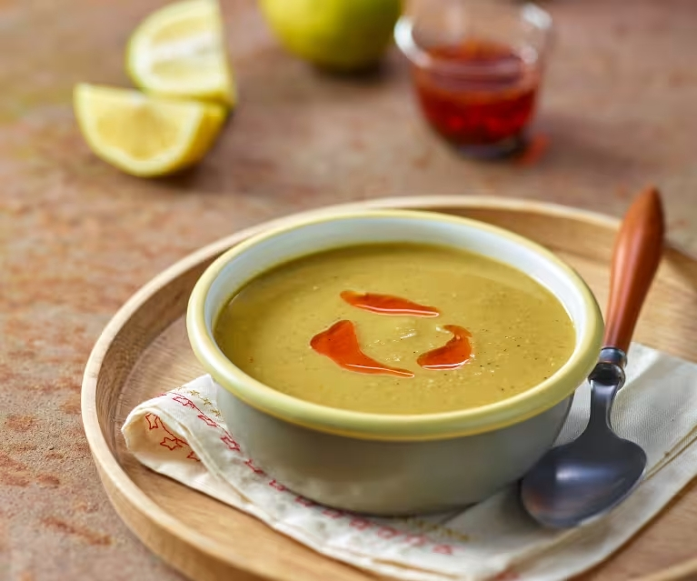

Mercimek Çorbası Tarifi
Lezzetli ve besleyici bir çorba! Soğuk günlerde iç ısıtan klasik bir tarif.
Hazırlık Süresi
- Toplam: 35 Dakika
- Hazırlık: 10 Dakika
- Pişirme: 25 Dakika
Malzemeler
- 1 su bardağı kırmızı mercimek
- 1 adet soğan
- 1 adet havuç
- 1 yemek kaşığı tereyağı veya sıvı yağ
- 5 su bardağı su veya tavuk suyu
- Tuz, karabiber, kimyon
- Üzeri için limon ve pul biber
Talimatlar
- Soğanı ve havucu doğrayın.
- Yağı tencerede ısıtıp soğanı kavurun.
- Havucu ekleyip birkaç dakika daha kavurun.
- Mercimeği ekleyin ve suyu ekleyerek kaynamaya bırakın.
- Çorba pişince blenderdan geçirin.
- Tuz ve baharatları ekleyerek sıcak servis edin.
Besin Değerleri
Aşağıdaki tablo, ilave malzemeler olmadan porsiyon başına besin değerlerini göstermektedir
| Kalori | 180kcal |
| Karbonhidrat | 0g |
| Protein | 10g |
| Yağlar | 5g |